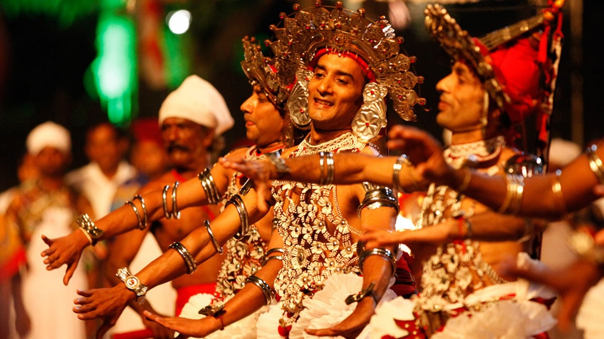
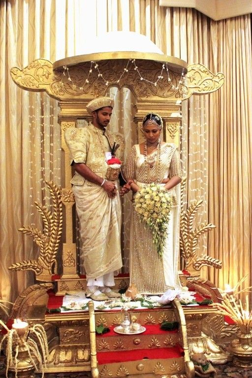
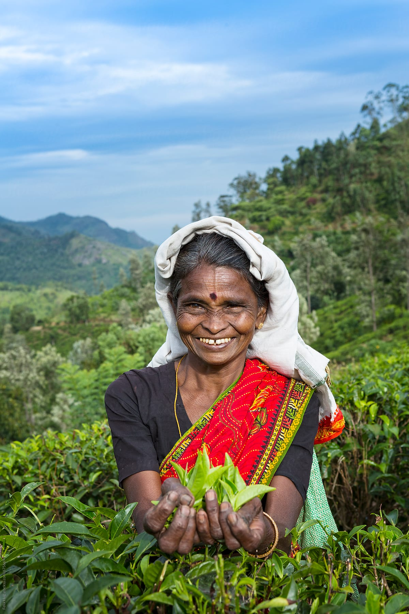

A Culture as Rich as the Island Itself
Sri Lanka's culture is a living tapestry woven from over 2,500 years of continuous civilisation. Sinhalese, Tamil, Muslim, and Burgher communities have each contributed their own traditions, languages, cuisines, and religious practices to create a multicultural society of remarkable depth and warmth.
Buddhism has shaped the island's identity profoundly — from the intricate architecture of ancient dagobas and the monastic way of life, to the serene rhythm of daily puja ceremonies and the joyful communal celebrations of Vesak. Yet Sri Lanka's culture is never monolithic; every province, every valley, every coastal village has its own festivals, its own flavours, and its own stories.
"In Sri Lanka, hospitality is not a policy — it is a reflex. Guests are honoured as gods."
Five Pillars of Sri Lankan Culture
Select a topic below to explore in depth.
Festivals of Sri Lanka
Vesak Poya
The most sacred Buddhist festival, celebrated in May on the full moon to commemorate the birth, enlightenment, and passing of the Buddha. Streets are illuminated with pandals (lantern structures) of extraordinary beauty, and free meals are distributed to all passersby at dansala stalls.
Sinhala & Tamil New Year
Celebrated on April 13th–14th, this is one of Sri Lanka's most cherished national holidays. Families come together to perform traditional rituals, light the hearth at the auspicious moment, eat milk rice (kiribath), play traditional games, and exchange gifts and sweets.
Kandy Esala Perahera
One of Asia's most spectacular processions, held in July/August in Kandy. The festival features elaborately decorated elephants, traditional drummers, whip-crackers, and torch-bearers parading through the streets in honour of the Sacred Tooth Relic of the Buddha.
Deepavali
The Hindu Festival of Lights, celebrated by Sri Lanka's Tamil community with oil lamps, fireworks, traditional sweets, and the worship of Goddess Lakshmi. It is a public holiday marking the triumph of light over darkness and knowledge over ignorance.
Milad un-Nabi
The Prophet's birthday, celebrated by Sri Lanka's Muslim community with prayers, recitations, community meals, and charitable acts. Mosques across the country are decorated with colourful lights and flags.
Living Traditions
Sri Lankan traditions are deeply rooted in Buddhist and Hindu philosophical values that emphasise respect, community, and harmony with the natural world. These traditions shape daily life in ways both visible and subtle.
Greetings & Respect
The traditional Sri Lankan greeting is Ayubowan — placing both hands together at the chest and bowing slightly. The word translates as "may you live long" and is a gesture of deep respect and warm welcome. Elders and monks are always greeted first and treated with special reverence.
Dress & Attire
Traditional Sri Lankan dress for women includes the saree and the osariya (Kandyan saree), a regal nine-yard draping style worn at formal occasions. Men traditionally wear the sarong (a wraparound cloth), though Western dress is common in cities. When visiting temples, modest clothing covering the shoulders and knees is required.
Family & Community Values
Family is the centre of Sri Lankan life. Extended families often live together or nearby, and communal celebrations of weddings, births, and religious milestones are elaborate, generous, and inclusive. Neighbours, neighbours' neighbours, and even strangers are welcomed at festive gatherings.
Religious Practices
Daily puja (worship) at home shrines and temple visits are integral to life for most Sri Lankans. The full-moon (poya) day is a public holiday each month, during which many Sri Lankans observe sil (a day of spiritual reflection, fasting, and merit-making).

The Sri Lankan Table
Sri Lankan cuisine is one of the most vibrant and complex in Asia — bold spices, fresh coconut, tangy tamarind, and pandan-laced curries create an unforgettable flavour experience.
Rice & Curry
The cornerstone of Sri Lankan dining. A typical meal consists of steamed red or white rice accompanied by multiple curries — fish, chicken, lentils (dhal), a coconut sambol, a leafy mallum, and a fiery pol sambol. Traditionally eaten with the right hand.
Hoppers (Appa)
Bowl-shaped pancakes made from fermented rice flour and coconut milk. The classic egg hopper features a perfectly cooked egg in the centre. String hoppers (indiappa) are delicate rice flour noodle nests, typically eaten at breakfast with a fragrant curry.
Kottu Roti
Sri Lanka's beloved street food – shredded flat bread (roti) stir-fried on a hot iron griddle with vegetables, egg, and a choice of chicken, beef, or seafood. The rhythmic clanging of the steel blades on the griddle is the unmistakable soundtrack of Sri Lankan evenings.
Pol Sambol
A fiery coconut relish made from freshly grated coconut, red chilli, shallots, Maldive fish, lime juice, and salt. It is the essential accompaniment to every Sri Lankan breakfast and adds a welcome punch of heat and flavour to any meal.
Milk Rice (Kiribath)
Prepared by cooking rice in rich coconut milk until creamy, then pressed flat and cut into diamond shapes. Kiribath is eaten at auspicious occasions — on the first day of every month, at New Year, weddings, and any celebration worth marking with a sacred tradition.
Seafood
With over 1,600 kilometres of coastline, Sri Lanka offers exceptional fresh seafood — grilled cuttlefish, prawn curry, crab in black pepper sauce, and freshly caught tuna prepared with a complexity of spices that transforms each dish into an experience.
The Art of Ceylon Tea
Ceylon tea is arguably Sri Lanka's most famous gift to the world. Introduced by British planter James Taylor in the 1860s as a replacement for the failing coffee industry, tea quickly transformed the island's economy and landscape. Today, Sri Lanka is the world's fourth-largest tea producer, and its highland estates produce some of the finest single-origin teas on earth.
"Tea is not just a drink in Sri Lanka. It is a ritual, a greeting, and a conversation all in one."
The three main growing regions each produce teas with distinct characters: Nuwara Eliya teas are light, floral, and delicate; Kandy teas are medium-bodied and versatile; while Uva teas are bold, brisk, and full of character.
From Leaf to Cup — The Journey
Plucking
Skilled tea pluckers select only the top two leaves and a bud — the finest, most tender growth — by hand, filling baskets weighing up to 25kg per day.
Withering & Rolling
Leaves are spread on wire racks to reduce moisture, then rolled to break cell walls, releasing the essential oils and enzymes that create the tea's flavour.
Firing & Grading
Rolled leaves are fired in ovens to halt oxidation and lock in flavour. The dried tea is then sorted, graded by leaf size, and prepared for packaging and export.

The Spirit of Ayubowan
Sri Lankans are consistently ranked among the warmest, most hospitable people in Asia. The concept of atithi devo bhava — the guest is god — runs deep in the culture, creating experiences that travellers remember long after they leave the island.
Village Stays
Authentic homestays and village tourism programmes allow guests to live with local families, share home-cooked meals, and participate in daily life — from cooking classes to farming, fishing, and craft-making.
Generous Sharing
It is considered rude to eat alone in front of others without offering to share. Food is given freely and generously, and guests are always served first with the best portions available.
Tea as a Welcome
No guest visits a Sri Lankan home without being offered a cup of tea within minutes of arrival. This small ritual is the most sincere expression of welcome in the culture — and the tea is always freshly brewed.
Going Out of Their Way
Sri Lankans will readily walk or drive visitors to a destination rather than simply giving directions. This instinctive helpfulness — without expectation of reward — consistently surprises and delights travellers.
Ready to Experience It All First-hand?
Plan your cultural journey across Sri Lanka with our personalised trip planning tool.